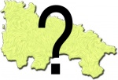
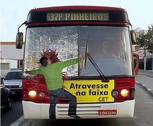
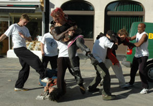

Ibagué
 De: La Frikipedia, la enciclopedia extremadamente seria.
De: La Frikipedia, la enciclopedia extremadamente seria.
| De la serie ciudades del mundo:
|
| Ibagué o Ibagüey
|
|
|

|
| (Bandera)
|
(Escudo de armas)
|
|
| Topónimo oficial
|
Ibagué
|
| País
|
Chibchombia
|
| Código postal
|
Nadie Sabe
|
| Superficie
|
Desde el nevado hasta el peaje de GualanDay
|
| Altitud
|
1200 metros y pico
|
| Distancia
|
como 100 cuadras
|
| Fundación
|
Un ladronzuelo español
|
| Población
|
100% desocupados
|
| Gentilicio
|
Peresozos, flojos, corronchos, sin oficio, desocupados, desempleados o simplemente Ibaguereños
|
| Alcalde
|
luis H(de hijoputa)
|
| Ayyy,que pereza
|
«Voy a trabajar»
~ Ibaguereño antes de ir a tomarse unas polas
«Voy a conseguir empleo»
~ Ibaguereño antes de que se acueste a dormir y se le olvide conseguir empleo
«Voy a hacer la tarea más tarde»
~ Estudiante Ibaguereño antes de que se acueste a dormir y se le olvide hacer su tarea
«Centenario, Centenario, centenario!!!»
~ Estudiantes Ibaguereños después de clases
«Uy no, que perezaaaaaaaaaa»
~ Celio cuando va a hablar sobre Ibagué
Ibagué, Ibagüey, Ciudad Tamal o La hamaca de Colombia es una ciudad que se encuentra en algún lugar de Chibchombia. Tiene una población de 5000000 corronchoshabitantes, siendo pues la octava en población después de Bucaramanga y la primera en población peresoza. Su alcalde es el señor Cucho del Botadero Chucho Botero (hasta el nombre lo delata).
Historia

La gente de Ibagué es muy alegre
Ibagué fue fundada el 14 de octubre de 1550 (fecha importante para el Orgullo corroncho) por el ladronzuelocapitán aspañol Andrés López de LoGalarza. Y bla bla bla, etc etc el resto no importa. Actualmente, es una ciudad llena de vagosciudad cosmopolita, donde llegan a diario cientos de personas de todo el mundo, sobre todo flojos y corronchos que quieren vivir bien.
Aspectos urbanísticos
Barrios de Ibagué
- ARKAdenoeLA
- Recaute
- Calarcá
- Mamonsure
- Jordan Grand Prix
- Tulio muy Varón
- Pajisterio
- La Pocarena
- EntreTrios
- Picalaleña
- El Salado (Barrio exclusivo de desempleados desafortunados)
- Combeima
- Caliz
- Hartín
- Chandander
- Cabo Cañaveral
- La Piojota
- La Piola
- Mamén
- Interpaguen (pues ahi se puede pagar los Servicios
pubicos públicos)
- La Pobresta
- Ibagué modelo 3000
- Nuevo Arma-dero
- Los Buscamanes
- Casa Night Club
- Piedra Voltiada
- Zancón
- Clarita del Botadero
- El Verguel
- Barbovia
- Miro-lindo
- Apartamental
- Kienedy
- Robadera Simón Bolívar
- Piedregal
- Santa Melena
- Vulgaima
- Limonar
- Villa Arepera (ups... perdón Villa Restrepo)
- Villa Malén
- Arkapizza
- Arkamónita
- Tapacio
- Va al paraiso
Sitios importantes de Ibagué
- Arkacentro: centro comercial muy concurrido por skinheads extremadamente
calvos como el Calvo de La Sexta.violentos. Hacia la medianoche, Arkacentro nos ofrece un gran espectáculo de escenas sexualesviolentas entre skinheads y gente peliparadapunkeros.
- Teatro Tolima: sitio conocido por las presentaciones de obras de teatro que nadie o unos cuantos desocupados ven. Pero los espectadores, en vez de ver las obras que allí se presentan, se dedican a hacer visita, gracias a la oscuridad ultratumbica de este teatro.
- Barrio El Salado: es el barrio más alejado de Ibagué, son excluidos por traer mala suerte a la ciudad. Tomen por salados!!!.
-
MultiparcheMulticentro: Tambien conocido como Multidesparche famoso y concurrido centro comercial donde todos los días se ponen cita los habitantes de Ibagué, sobre todo los emos y los gomelos sin oficio. Sus baños son tan grandes y escondidos que a diario entran bastantes personas allí para poder tener sexohacer sus necesidades sin que nadie los moleste. Tiene en sus instalaciones la estafadora cadena de almacenes Carrefour.
- Homecenter: almacén tan enorme como King Kong, donde van las mamis a comprar las cosas que van a tener en sus casas, ellas se sienten en Disneylandia, sobre todo en navidad. Además, tiene un vivero muy grande con flores de todo tipo, como Margaritos, Violetos, Jazminos, Jacintas, Clavelas, Cayenos, Rosas y Azucenos. Allí también venden Dunkin Donuts.
- Barrio Jordan Grand Prix o Ahilodán: el barrio más grande de Ibagué, tan grande como Ciudad de México. Aquí creció Michael Jordan y había una base del Jordan Grand Prix. Además, es el barrio colombiano con mayor número de gomelos y gente sin oficio. Cuenta con muchos sitios oscuros e inhospitos donde fácilmente se puede cometer
pendejadasfechorías de toda índole, sobre todo al lado del Colegio Juan Locha y recocha.
- Conservatorio Musical: allí es donde inician a
joderse la vidaformarse en la cultura local los niños y jóvenes de Ibagué. Primero, les enseñan Juan Gabriel música chibchombiana. Luego, les enseñan sexoetiqueta y buenas costumbres y, para rematar, les enseñan cultura y costumbres locales.
- Estadio Manuel Murillo Toro: único
establoestadio del país donde un circo grupo de corronchos desempleados llamado Deportes Tolima puede juntarse a jugar fútbol y hacer ilusionar a una ciudad y luego perder. Alli también permanece usualmente un terrón de salsujeto plumífero llamado Indio Pijao(el hincha más acérrimo del Tolima) Allí fue donde se hizo la masacrehundieron Ramérica, Millonarios, Pali, Patetico Naciomal, Huila, Chandafé y otros.
- Mercacentro: supermercado netamente
pobrelocal, donde se pueden encontrar camas pa echarse a dormirartículos de toda clase. Su lema es: Es de todos, es de aquí.
- Nevado del Tolima: es el terror de Ibagué. Los religiosos les han hecho creer a los ibaguereños que cuando haga erupción la ciudad caerá como Kon Hoja bajo el ataque dePein .
- Éxito ó Sin éxito: Es el almacen más careto de Ibagué, se está quedando pobre cortesía de Mercacentro.
- Cárcel de mínima seguridad de Picaleña|Pica la leña: allí todo se parece a Prison Break, sobre todos los presos, que son tan
homosexualesmetrosexuales como los protagonistas de esa serie..
- Cerro La
CanicaMartinica: el mirador más famoso de Ibagué. Es el sitio preferido de los turistas y habitantes locales, allí se pueden realizar desde caminatas hasta excursiones a bajo costo.

Naruto al enterarse que en Makro
robo debes pagar por una bolsa para llevar las compras
- Makro
robo: es un sitio lejano de la ciudad. Es una bodega donde puedes comprar cosas marca pajarito, pues todo lo que venden es marca pajarito. Actualmente es utilizado como un almacén de fachada.
- Romboi de Miro-lindo: un lugar donde uno puede marearse si no sabe manejar a la perfección. Usualmente, está lleno de taxis cuyos dueños parquean allí esperando a que algún huevon se acerque y
les haga propuestas indecentesdisfrute de sus servicios de taxista.
- Terminal de Transportes: allí es donde llegan todos los buses que vienen desde otras ciudades hacia Ibagué. Tiene muchas oficinas y locales, pero el más destacado es el de personas perdidas y desubicadas. Allí llegan los que usualmente no saben donde están parados, han salido a la ciudad, se han perdido, han aparecido en el programa de televisión Los Perdidos Buscan Su Hogar y, cuando por fin dan con ellos, aparecen sin camisa, con los pantalones o las faldas abajo y completamente oliendo a
sexojabón de hotel.
- Plaza de la 21: el sitio donde, además de mercado, se venden todo tipo de
maricadasartículos representativos de la cultura local, eso sí, a bajo costo y de mala calidad.
- Plaza Garibaldi: un lugar muy pero muy oscuro donde cantan
los idiotas que no entraron a American idol y el Factor Xmariachis, nos traumatizan con rancheras y nos hacen sentir como de otro país. Sus caras más conocidas son Mark Tacher (Emiliano Sánchez ó Francisco o como se llame ese man), Gregorio Pernía (el coloso de Jalísco) y Carolina Ramírez.

Acción típica del Parque Centenario
- Parque Centenario: Es el mejor sitio en Ibagué, alli es donde se dan las mejores batallas de toda la ciudad, hay desde peleas de alumnos de colegios cercanos hasta peleas de barras bravas. ahi mísmo está la concha acústica, donde a parte de que hacen eventos culturales, se realizan las peleas para peleas con más público.
- Piscinas Olímpicas: En este sitio, como dice su nombre, hay piscinas olímpicas donde te puedes ahogar en la piscina principal o en la piscina de clavados. Aquí hay canchas de Baloncesto y antes había una imagen del gran Bruce Lee. También hacen eventos como Expo-Tamalima y una exhibición de automóviles al estilo Bogotá, Paris, Frankfurt y Ginebra.
- Parque Deportivo: Aquí puedes venir a jugar un partido de futbol, montar en bicicleta, patinar, o ir a la piscina de Tsunamis. Se destaca el velódromo abandonado y la biblioteca virtual que no sirve para nada.
- Parque acuatico Comfatolima y Comfenalco: Son parques acuaticos donde hay piscinas
llena de orina como en South Park. La de Comfatolima queda en El Salado y la de Comfenalco queda al frente de la Carcel de Picalaleña (algunas veces, los presos se bañan allá, al mejor estilo Tolemaida).
Transporte de Ibagué
Calles y Avenidas de Ibagué
 Cuidadin, esto te puede pasar si cruzas la Av. Ambalá
Ibagué tiene varias avenidas importantes que estan en obras por los Nulerecorren la ciudad casi de un extermo a otro, entre las cuales se encuentran la avenida Lambalá, la Gravinal, Miro-lindo, Cuarta Establo y Ferrocarril (esta gente está loca, pues ¡Ya no hay ferrocarril!).
En cuanto a las demás calles y carreras, se destacan la carrera Quinta, la Cuarta, la Tercera, las calles Quince, Décima y Sesenta.
Hay un sitio donde se entrecruzan la carrera Quinta, la avenida Miro-lindo y la avenida Guavinal, llamado el Romboid de la mierda música, el cual albergaba un monumento en decadencia que en cualquier momento podría derrumbarse y ocasionar entre trancones bien tremendos y quién sabe qué cosas más, ya lo quitaron para hacer un puente.
¿Cómo llegar a Ibagué?
- Vía terrestre: durante todo el día hay servicio de bus, chiva y zorra desde Huecotá, Ramenia, La Sucursal del Cielo, Pereira, Malaventura, Neiva York, Manizales, Yo-pal y Medallo.
- Vía aérea: Ibagué cuenta con el aeropuerto Perrales, el cual recibe vuelos nacionales e internacionales (principalmente desde San Francisco, Amsterdam). Los vuelos nacionales los realizan Sartena, Gorrianca, GuayFly (pasajes baratos) y DesAires.
Economía
La economía de Ibagué se basa en:

Ibaguereño un lúnes en un día de trabajo haciendo su máximo esfuerzo
- No hacer nada
- Dormir
- Buscar empleo
- Acostarse a dormir
- Restaurantes de corrientazos (el más famoso queda en la Av.
Gravinal Guavinal con calle 69, casi al frente de Drogas Copifam)
- Supermercados como
Mercadentro Mercacentro y sus 1000 sucursales, Carnefour y sus dos sucursales, SinÉxito, Makrorobo y hay un Homecenter y tiendas de la esquina
- Centros comerciales como
Multidesparche Multicentro, Combo de furbo Combeima, La Quinta y la 14. Los otros (Arkacentro, los panches, San Andresito y su copia barata San Andrexitos) Son están llenas de tiendas de Tecnología, copias y segundazos, así es, como en Huecotá. Así como también oficinas de abogados, tiendas abiertas abandonadas y un Sex Shop
- Droguerías como Drogas Copifam (la que
menos más barato dan, Drogas Super Costosas Baratas, Drogas La Realzabaja y Drogas Super InEficaces. Aquí venden coca, mariahuana, etc medicamentos. Aunque también puedes conseguir algunos de ellos en la tienda más cercana
- Almacenes de venta de mercancía pirata en todos lados
- Distribución de periódicos que nadie lee (El Viejo Día, Malito 7 días, Q'hubo ñerooooo!!!). Diarios 100% guisos
- Industria textilera, principalmente enfocada hacia el diseño de modas.
- Bares donde van los gomelos, fresas, ñeros y emos a embucharse Aguila, Tapa Roja y Ron San Juan
- Desfiles de moda a los que va la gente estrato 5
- Emisoras de radio como La voz del tamal, Buenas ondas de Ibagué, Ecos del
combo de futbolCombeima y Emisora Incultural del TamalimaTolima en AM. En FM se destacan La Pega, Tropicana Wash, Olimpica, Oxigeno y Tamalima FM Estereo.
- Turismo, a través de hoteles como el
Lambalá Ambalá, Telefonos Sofitel, Combo de furbo, y famosos prostíbulosamanecederos, como Karibana y EmBuchanas
Cultura
Ibagué fue anteriormente conocida como la Ciudad Musical de Chibchombia. Pero eso ya pasó. Ahora, Ibagué es La ciudad del desempleo, a pesar de ser el mejor lugar para vivir. La música constituyó durante mucho tiempo un orgullo para los ibaguereños, pero ahora los motivos de orgullo Son el Deportes Tolima, Santiago Cruz, el Tamal, la lechona y aparecer en el noticiero como la ciudad más desocupada, floja y corroncha del país.
Ibagué también se destaca por realizar anualmente el Festival Folclórico Colombiano, famoso a nivel nacional por la exhibición de putasreinas de belleza de todos los departamentos del país. Además, también resalta la cultura corroncha local, a través de eventos como el desfile sin nombre (el más famoso e importante de Colombia) y el Concurso Nacional de Canto, al cual han sido invitados personajes de talla nacional e internacional, como Green Day, Metallica, Coldplay, Christina Aguilera, Madonna, Britney Spears, entre otros.
Educación
Fresas...aqui???!!!...Nooooo!!!
ÑEROS...TAMBIEN???!!!...NOOOOOOOOOOOOOO!!!
 Clase de Educación Física en el Parque Centenario
A nivel educativo, Ibagué se ha destacado históricamente por su alto nivel de incultura, promovida a través de colegios e instituciones como La Normal Inferior, el Liceo Fresanal o Narcopan, el colegio Ex Alumnas de la expulsión, el colegio INEM: Instituto Narco de Estupidos de Mierda el colegio San Bunny o colegio de niños de mami, el colegioCisñeros, el colegio Santa Maleza, el Centro de reclusión de ñeros colegio San Limón, el colegio Seminario de San Joaco que ya fué cerrado por culpa del desocupado y bobo monseñor que lo cerró para llenar el colegio Tolimenso, el Colegio Champañá (Que horrografía la de esa gente) y el Colegio de las Vacas ó Colegio de La Malvada Familia, anteriormente denominado ProstitutoInstituto Técnico Lesbiano.
Grafitti hecho por un estudiante de la Universidad del Tolima
También cuenta con dos universidades: la Universidad del Tolima, la cual cuenta con las facultades de Diseño de Modas, Ciencias de Robo (programa cerrado por falta de traquetos), Medicina Veterinaria Zoofílica, Medicina, Relaciones internacionales para charlar, Chisme social, Peluquería, Modelaje, Licenciatura en Torturar niños con ideas estúpidas, Biología, Ingeniería fastidiosa industrial, Educación Física Nazi, Mamología y Diseño de Interiores. Otra es la Universidad de Ibagué ó Carouniversitaria, la cual se está quedando paulatinamente sin facultades, debido a la falta de estudiantes a causa de los altos costos educativos que los ibaguereños no pueden costear por el desempleo (otra de las razones por las cuales hay demasiados chupamedias en esa universidad).
En estos establecimientos puedes encontrar fresas, ñeros, emos, otakus, frikis, metachos, guisos, uno que otro iguazo, entre otras tribus urbanas.
Costumbres de Ibagué
- Todos comen Lechona y ta-mal, estos dos alimentos dan superpoderes. A mitad de año lo comen.
- Las parejas salen todos los domingos a desfilar cogidos de la mano por la peatonalizada carrera Tercera en el centro de la ciudad. Allí se agarran a hostias y, cuando hay indicios de que van a otro plano, llega la Policía y les dá bolillo.
- Salir a pasear

Esto es lo mejor que saben hacer los Ibaguereños
- Salir de farra
- Elevar cometas en el Parque deportivo o en un potrero
- Dormir
- Buscar empleo
- Nada
- Dar hostias en el Parque Centenario

Chica Ibaguereña hablando por Teléfono
Sabías qué...
- ...el mejor trabajo que hay en Ibagué es ser un simple vendedor?
- ...Si, exceptuamos a Ibagué y al Tolima, el 99,99999% del país dice que Ibagué es un pueblo?
- ...los propios Ibaguereños lo reconocen?
- ...Los maricas le huyen al centenario?
- ...Hay Otakus en Ibagué?
- ...Es la ciudad con mayor desempleo en el país por culpa de los campesinos sin oficio que llegan a la ciudad a no hacer ni mierda?
- ...en Ibagué no cae nieve, ni siquiera hay arco iris?
- ...el mayor sitio de entretenimiento en Ibagué a parte del estadio es la concha acustica donde se realizan peleas tipo WWE?
- ...el alcalde es el ladrón Nº1 de la ciudad?
- ...en Ibagué hay muchos perros, no solo los animales, sino tambien los hombres, que son unos perros?
- ...es un buen vividero, pero por culpa de los políticos ladrones que no hacen ni mierda hacen que haya desempleo y dañe la imagen de la ciudad?
Enlaces externos
Autor(es):
- Genericool
- Shadowmura
- Josenachito
- Generibot
- Gumitive
- AdeaQla
- Muerelibre
Frikipedia 2005-2016, Licencia
GFDL 1.2 - Extraído por FrikiLeaks